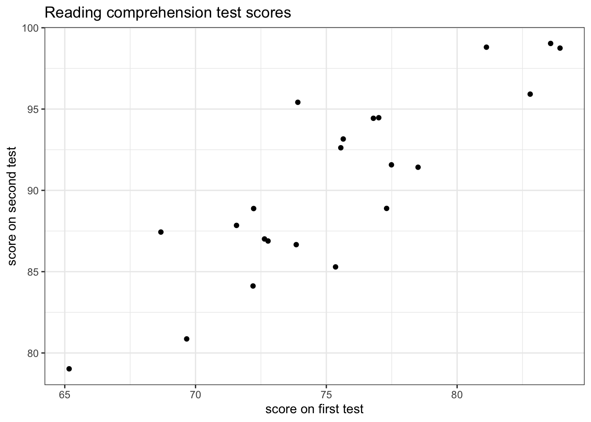

Multivariate normal
The multivariate normal (MVN)
Motivating examples:
Twenty two students take a reading comprehension test before and after receiving an instructional method. The result for each student is a bivariate vector \(Y_i\) that includes a pre- and post- instructional score.

\[ p(y) \]